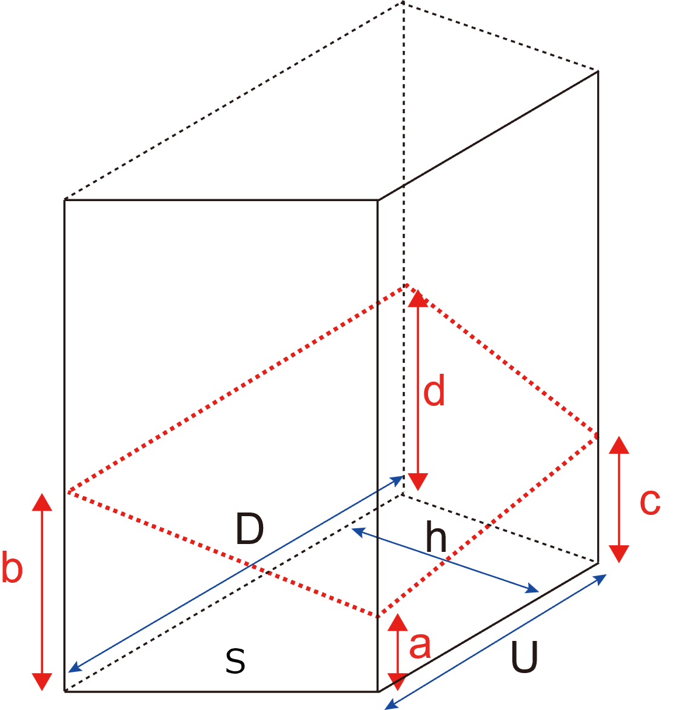

直方体，立方体，底面が平行四辺形，ひし形の際に成り立つ公式の導出を行いました．
ポイントは，
底面積を三角形で分割，さらには分割した三角形の面積が等しい
場合に，成り立つ公式でした．
さらには，正多面体を底面積に持つ立体も適用できそうです．
なので，台形，を底面に持つ立体は適用できない，ことになります．
しかし，全くお手上げなのでしょうか？
・台形
台形を底面に持つ立体（とりあえず，90度でそびえたつ）を斜めに切断した場合の体積です．

底面の台形は，
面積 ： S
上辺 ： U
底辺 ： D
高さ ： ｈ
上辺と底辺は平行
とし，a, b, c, d, が断面となります．
この4点も独立ではなく，3点決まると残りの1点が決まります．補助線を加えると，
となります．上辺と底辺の断面線は平行となりますが，そこからできる三角形は相似でありますが，合同ではありません
そこで，ｄとｂの差分を考えると，
\( \Large \displaystyle d - b= \frac{c-a}{U} \cdot D \)
となります．
直方体と同様に，三角柱に切り分けていきます．

各底面積を，S1, S2, とすると，
\( \Large \displaystyle S = S_1 + S_2 = \frac{U + D}{2} h\)
\( \Large \displaystyle S_1 = \frac{U }{2} h\)
\( \Large \displaystyle S_2 = \frac{D }{2} h\)
となりますので，
\( \Large \displaystyle V_1 = S_1 \frac{a+c+d}{3} \)
\( \Large \displaystyle V_2 = S_2 \frac{a+b+d}{3} \)
\( \Large \displaystyle V = V_1 + V_2 = S_1 \frac{a+c+d}{3} +S_2 \frac{a+b+d}{3}\)
\( \Large \displaystyle= \frac{U }{2} h \frac{a+c+d}{3} +\frac{D }{2} h \frac{a+b+d}{3}\)
\( \Large \displaystyle= \frac{h }{6} [ U(a+c+d) + D (a+b+d)] \)
とあまりきれいな形とは言えませんが，計算式を導出することができました．